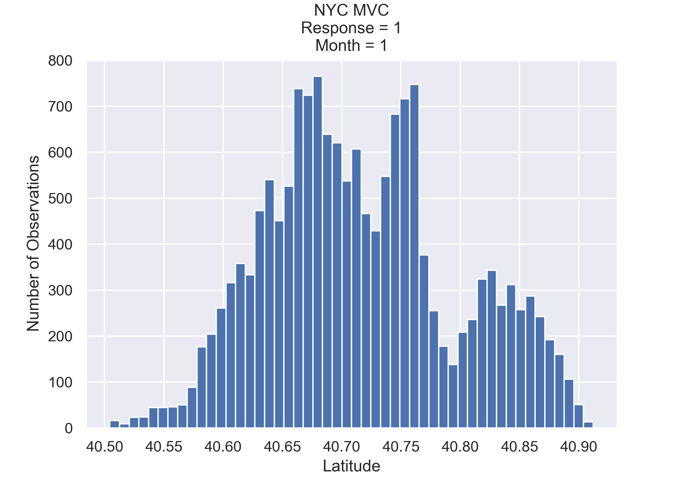

Vehicle crashes happen daily around the globe.
They, for example, cost the New York City economy an enormous amount of $4 billion per year
link.
Thus, it's might be beneficial to invistigate the chossen data to learn more about this
phenomena
and
analyse the core reasons and contributing factors behind those accidents.
Our goal through this project is to give the end user the ability to do interactive
investigation,
learn and build their own assumptions about this phenomena based on our extensive
statistical
analysis and visulizations.
Important Terminology:
The project is focused on the Response variable that indicates whether there is a injury/kill
or
not,
simply put whether there was a serious accident or not. Response=1 means we have a serious
accident
(involving an injury or kill) and Response=0 means the accident wasn't so serious.
Combined Datasets
Car Crashes
The NYC Motor Vehicle Collisions dataset is freely available through NYC Open
Data and has well defined Spatio-temporal information on casualties/damages features.
In this section the focus is the Response variable, which is analyzed
and visualized
based on the rest of the features. A spatio-temporal visualization with the use of a map
is also shown.
Three different models are compared, namely: Decision Tree, Random
Forest and Logistic Regression. Hyperparameter tuning is also performed to the Decision
Tree which has the best accuracy.
We are all master students from DTU - always with the weirdest
names possible...
Asterios Nastas
MSc Student, Human Centered Artificial Intelligence
Efstathios Alex Voinas
MSc Student, Human Centered Artificial Intelligence
Abdulstar Kousa
MSc Student, Mathematical Modelling and Computation
All models are incorrect but some of them are useful...
BASIC STATISTICS
A summary of the categorical features of the investigated
data.
Summary Statistics
In this project we study the 5 boroughs of the New York City: Bronx, Brooklyn, Manhattan,
Queens
and Staten
Island. BROOKLYN is the borough with the most collisions. Most crashes happened in 21st
Jan 2014 when NYC was hit by an East Coast Storm with extensive
Snow and Disruptions presen in the region. Because a video is more than 1000 words you
can see this video.
Name / Metric
count
unique
top
freq
CRASH DATE
958371
2922
01/21/2014
735
CRASH TIME
958371
1440
16:00
13944
BOROUGH
753698
5
BROOKLYN
234246
ON STREET NAME
958371
5994
broadway
12385
CONTRIBUTING FACTOR VEHICLE 1
958371
21
unspecified
363684
CONTRIBUTING FACTOR VEHICLE 2
958371
21
unspecified
699389
VEHICLE TYPE CODE 1
958371
12
sport utility vehicle
296845
VEHICLE TYPE CODE 2
958371
12
sport utility vehicle
231246
Day of week
958371
7
Friday
152943
Below are the numerical features investigated (with some extra statistics).
Judging from the mode, most collisions happen in September month, at 4PM on the
13th
day of the month.
Name / Metric
count
mean
std
min
25%
50%
75%
max
range
mode
ZIP CODE
753547.0
1.08e+04
557.85
10000.00
10306.00
11207.00
11249.00
11697.00
1697.00
11207.00
LATITUDE
958371.0
4.07e+01
0.08
40.50
40.67
40.72
40.77
40.91
0.41
40.86
LONGITUDE
958371.0
-7.39e+01
0.23
-201.36
-73.98
-73.93
-73.87
-32.77
168.59
-73.91
NUMBER OF PERSONS INJURED
958371.0
2.83e-01
0.68
0.00
0.00
0.00
0.00
43.00
43.00
0.00
NUMBER OF PERSONS KILLED
958371.0
1.03e-03
0.03
0.00
0.00
0.00
0.00
4.00
4.00
0.00
Response
958371.0
2.09e-01
0.41
0.00
0.00
0.00
0.00
1.00
1.00
0.00
Year
958371.0
2.02e+03
2.17
2013.00
2014.00
2016.00
2018.00
2020.00
7.00
2015.00
Month
958371.0
6.60e+00
3.46
1.00
4.00
7.00
10.00
12.00
11.00
10.00
Day
958371.0
1.56e+01
8.75
1.00
8.00
16.00
23.00
31.00
30.00
13.00
Hour
958371.0
1.34e+01
5.60
0.00
10.00
14.00
18.00
23.00
23.00
16.00
Minute
958371.0
2.43e+01
17.98
0.00
8.00
25.00
40.00
59.00
59.00
0.00
SPEED LIMIT MODE
958371.0
2.65e+01
5.59
0.00
25.00
25.00
25.00
50.00
50.00
25.00
PRECIPITATION
958371.0
1.46e-01
0.38
0.00
0.00
0.00
0.07
4.97
4.97
0.00
SNOW FALL
958371.0
1.06e-01
0.85
0.00
0.00
0.00
0.00
27.30
27.30
0.00
SNOW DEPTH
958371.0
4.45e-01
2.06
0.00
0.00
0.00
0.00
22.00
22.00
0.00
FOG, SMOKE OR HAZE
958371.0
4.09e-01
0.49
0.00
0.00
0.00
1.00
1.00
1.00
0.00
AVERAGE WIND SPEED
958371.0
4.83e+00
2.62
0.00
3.13
4.70
6.26
18.34
18.34
0.00
MAXIMUM TEMPERATURE
958371.0
6.33e+01
18.53
13.00
48.00
65.00
80.00
98.00
85.00
83.00
MINIMUM TEMPERATURE
958371.0
4.92e+01
17.18
-1.00
36.00
50.00
65.00
83.00
84.00
68.00
Interesting Counts
Category
Count
PEOPLE INJURED
271271
PEOPLE KILLED
983
RESPONSE
200134
NO-RESPONSE
758237
Self-explanatory interested counts. The number of non-serious crashes is 3.8
times larger than the severe/serious ones.
FEATURE INVESTIGATION
Some statistical plots to show the quality of the data
in visual form.
Box Plots
Below is the set of Blox-plots from the features of the Motor Vehicle Collisions
(MVC) data.
Below are the Box-plots from the Speed Limit and Weather datasets. We can see how the
outliers especial depict the extreme weather conditions!
Correlation Matrix
Above we see how correlated the data is giving a hint on the quality of our machine
learning modeling. We see many non-correlated features, a good indication
for a nice performing model.
Speed Limit Mode is kind of related to Year. This is validated because
"On
November
7, 2014, New York City’s default speed limit was changed from 30 mph to 25
mph".
Fog, Snow and Haze is related to Rainfall and Years. This seems logical as some
years might have rougher winters.
Wind Speed is related with Snow Fall and Rain Fall.
RESPONSE INVESTIGATION
This part investigates the binary feature of Response.
(serious=1 and non-serious=0)
Response over Years
Above we see the Responses (Non-Serious vs Serious accidents) thoughout the years
2013 to 2020.
We realise the dramatic decrease of the accidents in total in 2020 due to the
Covid-19 global pandemic. One positive that came out of this pandemic!
Apart from 2020 (due to the global pandemic that is a special situation) 2016 is
the year with the least collisions.
In 2018 and 2019 the serious collisions in New York City actually skyrocketed
reaching a peak in 2018 with more than 28,000 serious accidents.
Response over Boroughs
Above we see that the correlation of serious accidents to the number of
non-serious
ones.
Brooklyn is first in accidents, followed by Queens and then Manhattan. Following
the big 3 we have Bronx and Staten Island with much lesser accidents
accordingly.
Response over 24hrs
In the response based on the 24 hours we clearly see the majority of the
collisions happen during the peak hours. This involve the times society is more
active.
Response over Week Days
In the response based on the week days, Friday is by far the "busiest" day where
most collisions happen, probably this is because people are tired at that time
of the week.
Jitter Plots
The pattern of non-injuries/kills is much busier that the lethal car accidents.
This makes sense.
We also observe a high amount of accident being registered only at intervals of
10 mins (the officers rounded up the numbers to simplify the time) but the are
also other lethal accidents that depict the exact minute.
Frequency over Latitude

It can be seen that the two response histograms show mixed Gaussian
spatio-temporal distributions (January & latitude), excluding the high peak
noise/outliers.
Collisions on Map
The map is created to portrait specific collisions for a selected period, specified
with a Start and End Date.
We chose to visualize the serious/lethal collisions with red and the non-serious
collisions with blue in New York City for the month of January 2020-2021 between
12:00 and 18:00.
We observe that the Central Park/ Manhattan in general is very heavy in collisions
and also the same applies for Brooklyn.
We also, see the number of non-serious collisions (blue) is much bigger than the
serious/lethal ones.
VEHICLE TYPES & CONTRIBUTING FACTORS
Scroll down to interact with the Hourly distributions of
vehicle
types and contributing factors.
Hourly Distribution: Vehicle Types
Most vehicle types crashes peak around midday to evening hours!
Taxis actually crash throughout the day
Bus crashes peak in the morning and evening hours - the rush hours..!
Hourly Distribution: Contributing Factors
Most factors that cause crashes peak around midday to evening hours! Unsafe Speed is
a factor that occurs thoughout the mid-hours of the day. Alcohol Involvement
differentiates extremely from the rest. It happens mainly in the
evening to morning hours.
DATA PREPARATION FOR ML
Testing Different Spatio-temporal Distributions
Kolmogorov-Smirnov statistic shows that the response to values has indeed
different spatio-temporal distribution under the features of Latitude, Hour and
Month.
Below are the histograms that show the latitude distribution of the two Response
labels, in only January from 2013 until 2020 using 50 bins. It can be seen that
the two crime histograms show different spatio-temporal distributions.
Feature Slicing
For the machine learning part, we consider a subset of the dataset which
contains according to our intuition, the most important features that describe
the response.
This subset contains: The Response, Some Time related features, Place related
features, Vehicle types features, Casual features, Speed limits modes and the
Weather features.
Class Balancing
Since our data is unbalanced we consider balancing it using the Down-sample
Majority Class. Below is an overview of how the Response labels are before and
after
Balancing.
Response/Count
Before Balance
After Balance
0
758237
200134
1
200134
200134
Data Splitting
For training the ML models we will consider 5% of the data and the remaining 95%
will be held out as unseen data for validating the final ML model.
ALGORITHM COMPARISON
Some small intro here.
Model Results
Here we compare the performance of the Three algorithms, namely: Random Forest,
DecisionTree and Logistic Regression on the training data (all with the sklearn
default settings for now).
Above are the Box and Whisker plots comparing the considered algorithms: Decision
Tree, Random Forest and Logistic Regression, based on their performance. It's
observed that the
Decision Tree beats the others on sklearn default settings. Therefore it was the
one we chose
to tune and investigate further.
Classification Report
Final results for the Tuned Decision Tree Model.
Confusion Matrix
After tuning the Decision Tree on our training data (5% of the total data) using
recall as evaluation metric we came to a final model, let’s have a look into it.
We will start with the confusion matrix and the classification report of the
final tuned decision tree on the validation data (95% of the total data -
unseen):
precision
recall
accuracy
0
0.65
0.71
0.66
1
0.68
0.62
0.66
It is seen that our final model in general is doing fine. It has a good accuracy
in predicting the true positive class (dangerous MVC, Response = 1) which is
what we aimed for.
Feature Importance
Below are the features ordered based on their importance for predicting if the
accident will involve an injury/kill or not.
Feature
Contribution
VEHICLE TYPE CODE 2
0.329 +/- 0.004
CONTRIBUTING FACTOR VEHICLE 2
0.267 +/- 0.005
ON STREET NAME
0.060 +/- 0.003
CONTRIBUTING FACTOR VEHICLE 1
0.052 +/- 0.002/td>
VEHICLE TYPE CODE 1
0.038 +/- 0.001
Hour
0.027 +/- 0.002
SPEED LIMIT MODE
0.020 +/- 0.001
MINIMUM TEMPERATURE
0.016 +/- 0.002
PRECIPITATION
0.012 +/- 0.002
AVERAGE WIND SPEED
0.010 +/- 0.001
Month
0.008 +/- 0.000
MAXIMUM TEMPERATURE
0.008 +/- 0.001
FOG, SMOKE OR HAZE
0.005 +/- 0.001
Day of week
0.004 +/- 0.001
SNOW DEPTH
0.003 +/- 0.001
Decision Tree Plot
Just to have an idea of how our Tuned Decision Tree is working, below is a
Tree Plot (for visualization purposes we will set the maximum depth to 2).